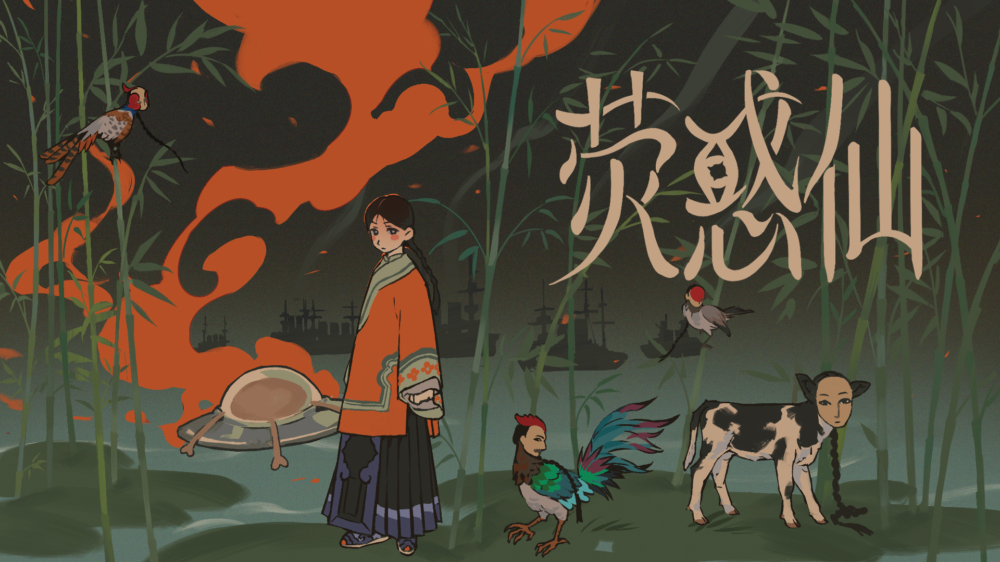

YingHuoXian: The Mars Wraith (Gamejam Prototype)

A historical‑sci‑fi AVG set in the late Qing Dynasty, combining first‑person perspective with The Case of the Golden Idol‑style puzzle gameplay. Martians descend upon the coastal waters, where desires and ambitions of feudal families intertwine, and fates of overseas‑educated figures collide with the chaos of war — a fusion of Eastern aesthetics and extraterrestrial‑technology imagination.
The content shown in this project is its Game Jam submission build. The core goal was to produce a playable gameplay prototype within a tight time limit. The game blends The Case of the Golden Idol‑style design with 360° 3D projected‑rotation puzzles. Each level is driven by the first‑person perspectives of multiple characters within the scene. Players switch between viewpoints, input corresponding character names, deduce the full sequence of events, and solve puzzles through fill‑in‑the‑blank mechanics.
This story is set between 1886 and 1900 in the late Qing Dynasty. It features fictionalized characters adapted from historical figures and integrates pivotal real-world events — including the Self-Strengthening Movement, the First Sino-Japanese War, and the Eight-Power Allied Forces Invasion — into an alternate sci-fi framework centered on the arrival of Martian beings.
Narrative cutscenes adopt a highly interactive visual‑novel format inspired by Hontoko’s Seven Mysteries. Rather than static pre‑rendered cutscenes, story segments feature branching dialogue, clickable background hotspots, and dynamic character sprites that shift with player choices and story progress.
Players are not passive viewers. Hidden lore fragments and character foreshadowing are scattered throughout interactive scenes. Identical scenes deliver different lines and tones based on the protagonist’s story state, requiring players to observe dialogue and environmental details to uncover the full truth of Yinghuo Immortal.
Each level consists of first‑person viewpoints from one or more in‑scene characters. UI buttons allow perspective switching. On the puzzle interface, players must input the character name for each viewpoint.
This design creates multi‑layered narratives for a single scene. Players must examine the same event through different characters’ perspectives to piece together the full truth. Identical dialogue carries vastly different meanings across viewpoints.
Perspective‑switching serves as a core puzzle mechanic: players must first identify whose point‑of‑view they are experiencing before solving puzzles.